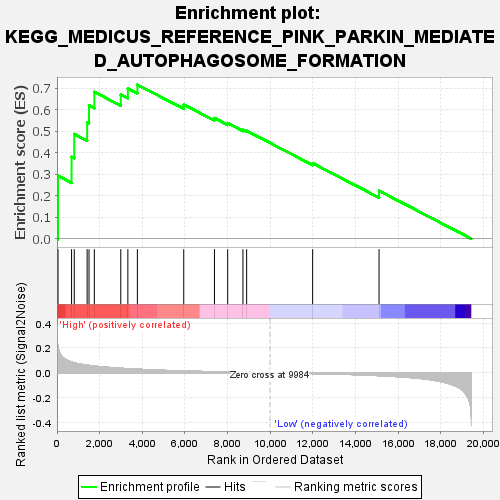
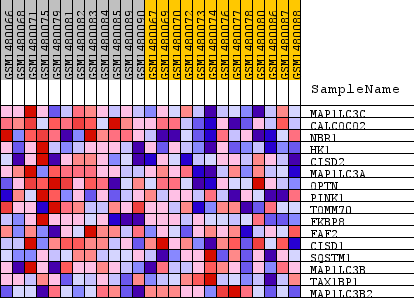
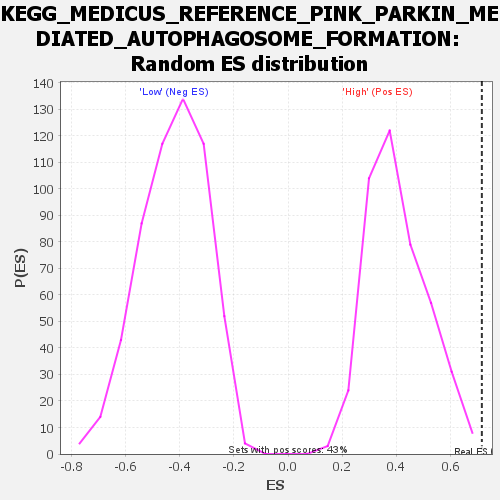

| Dataset | WG6v3.CPT1A.cls#High_versus_Low.CPT1A.cls#High_versus_Low_repos |
| Phenotype | CPT1A.cls#High_versus_Low_repos |
| Upregulated in class | High |
| GeneSet | KEGG_MEDICUS_REFERENCE_PINK_PARKIN_MEDIATED_AUTOPHAGOSOME_FORMATION |
| Enrichment Score (ES) | 0.7154208 |
| Normalized Enrichment Score (NES) | 1.7733412 |
| Nominal p-value | 0.0023364485 |
| FDR q-value | 0.29762244 |
| FWER p-Value | 0.25 |

| SYMBOL | TITLE | RANK IN GENE LIST | RANK METRIC SCORE | RUNNING ES | CORE ENRICHMENT | |
|---|---|---|---|---|---|---|
| 1 | MAP1LC3C | MAP1LC3C | 47 | 0.210 | 0.2923 | Yes |
| 2 | CALCOCO2 | CALCOCO2 | 683 | 0.086 | 0.3806 | Yes |
| 3 | NBR1 | NBR1 | 809 | 0.080 | 0.4863 | Yes |
| 4 | HK1 | HK1 | 1413 | 0.061 | 0.5411 | Yes |
| 5 | CISD2 | CISD2 | 1501 | 0.059 | 0.6194 | Yes |
| 6 | MAP1LC3A | MAP1LC3A | 1750 | 0.054 | 0.6820 | Yes |
| 7 | OPTN | OPTN | 2990 | 0.036 | 0.6693 | Yes |
| 8 | PINK1 | PINK1 | 3322 | 0.033 | 0.6980 | Yes |
| 9 | TOMM70 | TOMM70 | 3768 | 0.029 | 0.7154 | Yes |
| 10 | FKBP8 | FKBP8 | 5942 | 0.014 | 0.6232 | No |
| 11 | FAF2 | FAF2 | 7381 | 0.008 | 0.5605 | No |
| 12 | CISD1 | CISD1 | 8002 | 0.006 | 0.5372 | No |
| 13 | SQSTM1 | SQSTM1 | 8717 | 0.004 | 0.5057 | No |
| 14 | MAP1LC3B | MAP1LC3B | 8890 | 0.003 | 0.5015 | No |
| 15 | TAX1BP1 | TAX1BP1 | 11985 | -0.006 | 0.3509 | No |
| 16 | MAP1LC3B2 | MAP1LC3B2 | 15098 | -0.023 | 0.2228 | No |

